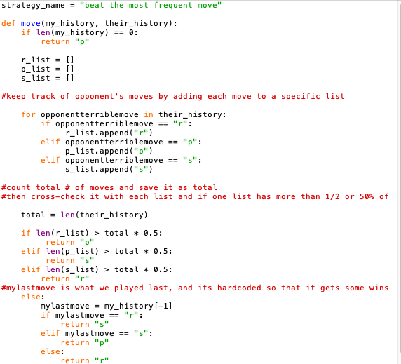
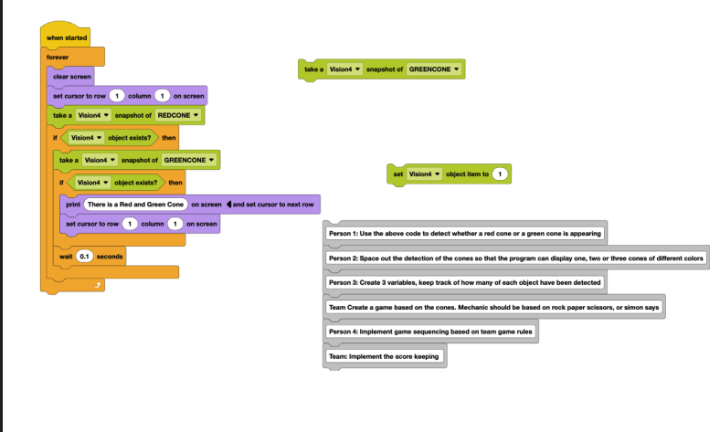

Student at Emerald High School · Entrepreneur · Leader · Builder of brands, nonprofits, and ideas.
I'm a sophomore at Emerald High School in Dublin, California, maintaining a 4.0 GPA while staying deeply involved in leadership, entrepreneurship, and community service. I believe in learning by doing — whether that means co-founding a nonprofit, launching a clothing brand, competing in varsity debate, or diving into hackathons to sharpen my coding skills.
I've held every officer role on my middle school Student Council, led a team of 20+ people at my nonprofit, and represented my school on the varsity debate circuit — all while exploring my passions for technology, design, and entrepreneurship. I'm always looking for the next challenge to take on.
Emerald High School
Class of 2028 · GPA: 4.0
Varsity Debate Team
Tamil School
7-Year Program · Graduated 2023
4.0 GPA throughout middle school and first semester of high school.
Honor Roll — all of middle school.
Frosh Most Hustle Award — Emerald High School Volleyball (2024).
I'm passionate about building things that matter. From running a nonprofit to designing a clothing brand, I love combining creativity with strategy. I thrive in fast-paced environments, enjoy collaboration, and always aim to leave things better than I found them.
English — Fluent
Tamil — Fluent
Spanish — Conversational

Rock paper scissors game was one of the most enjoyable games I have coded since there was the end goal of achieving the cup and bragging rights. Coding it and strategizing were really fun, as it was up to my own creativity to brainstorm and think of ways to beat my opponents. One of my favorite projects to date.
Objective: Build a Python-based rock paper scissors bot using a custom strategy to consistently beat opponents.
My Role: Sole developer — designed the strategy logic, tracked opponent move history, and iterated on the algorithm.
What I Learned: Pattern recognition, strategic thinking in code, and how to use data structures to inform decision-making.

The cone game was during our SDV unit, which was my favorite unit so far in CSE. SDVs are so fun to experiment with and with the vision sensor and the challenge to find the cones, we were able to work together with my team and achieve the objective successfully. I would rate it a solid 9/10.
Objective: Program an SDV with a vision sensor to detect and respond to red and green cones, then build a team-based game around that mechanic.
My Role: Team member — contributed to vision detection logic, game sequencing, and score keeping implementation.
What I Learned: Sensor-based programming, team collaboration under a shared objective, and creative problem-solving with hardware constraints.